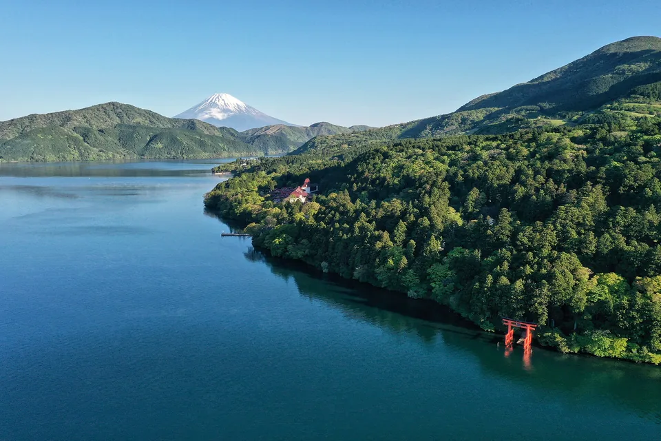

Noclegi · 8 nocy w Japonii + noc w Abu Zabi · 4 obiekty · chronologicznie
Hotele
Trzy bazy pod rodzinę 2+2: aparthotele MIMARU z kuchnią i wspólnymi pralniami samoobsługowymi oraz ryokan nad jeziorem Ashi na jedną górską noc. Cztery pierwsze noce w jednym apartamencie w Kiocie, potem trzy w Tokio.
Grand Millennium Al Wahda
Hotel z pakietu stopover. Dwa pokoje Standard po dwie osoby, bez śniadania. Każdy rodzic z jednym dzieckiem. Godzinę wymeldowania 28.04 potwierdźcie na recepcji; plan zakłada wyjazd na lotnisko o 17:30.
Anulowanie: Rezerwacja bezzwrotna według vouchera. Numery i warunki w prywatnym potwierdzeniu.
 📍 Zobacz w Google Maps →
📍 Zobacz w Google Maps →
MIMARU Kyoto STATION
Apartament rodzinny dla 2+2, z kuchnią. W potwierdzeniu nie ma posiłków. Meldunek 15:00-22:00, wymeldowanie do 11:00; przy opóźnionym locie uprzedźcie recepcję. Pranie planujemy 2.05 po warsztacie.
Anulowanie: Bezpłatnie do 21.04.2027, 23:59 JST (16:59 w Polsce). Później opłata według potwierdzenia: pełna cena.
 📍 Zobacz w Google Maps →
📍 Zobacz w Google Maps →
MIMARU Tokyo AKASAKA
Zarezerwowany apartament japoński, a nie wariant z czterema łóżkami: dwa łóżka i futony. Kuchnia, bez posiłków, pralnia samoobsługowa na miejscu. Meldunek 15:00-22:00. W zgłoszeniu do hotelu widnieje przyjazd 18:00-19:00; przed podróżą uzgodnijcie planowany meldunek około 15:00.
Anulowanie: Bezpłatnie do 25.04.2027, 23:59 JST (16:59 w Polsce). Później opłata według potwierdzenia: pełna cena.
 📍 Zobacz w Google Maps →
📍 Zobacz w Google Maps →
Hakone Ashinoko Hanaori
Potwierdzenie Booking: Japanese-Western Deluxe Room with Open-air Bath. Macie prywatną kąpiel na świeżym powietrzu przy pokoju, łóżka oraz futony, śniadanie i kolację. Nie trzeba rezerwować dodatkowej płatnej kąpieli tylko po to, żeby mieć prywatność. Meldunek 15:00-20:00, wymeldowanie do 10:00. Od 1.10.2026 hotelowy shuttle jeździ do Gōry; do Odawary planujemy autobus linii T. Zdjęcie przedstawia jezioro Ashi, nie zarezerwowany pokój (Charlie fong, CC BY-SA 4.0).
Anulowanie: Bezpłatnie do 2.05.2027, 23:59 JST (16:59 w Polsce). Od 3.05 opłata według potwierdzenia: pełna cena.

📍 Zobacz w Google Maps →Mapa baz w Japonii
Punkty pokazują okolice baz, nie wejścia do budynków. Do hotelu nawigujcie z jego zdjęcia lub przycisku Google Maps powyżej.
- 1 Kyoto Station - okolica pierwszej bazy (4 noce)
- 2 Akasaka - okolica bazy w Tokio (3 noce)
- 3 Hakone Ashinoko Hanaori · Tōgendai, jezioro Ashi (1 noc)
- Rezerwacje są potwierdzone. Przy ewentualnej zmianie najpierw sprawdźcie dostępność nowego pokoju dla czterech osób i oba terminy anulowania. Pobyt w Kiocie wypada podczas Golden Week.
- Ryokan w Hakone: Hanaori nad jeziorem Ashi, pokój Deluxe dla 4 osób z prywatną kąpielą, kolacją i śniadaniem. Bezpłatne anulowanie tylko do 2.05.2027, 23:59 JST.
- Potwierdzenia trzech hoteli z 8.09 podają łącznie 500 443 JPY i zapłacono 0 JPY. Około 12 tys. zł to przeliczenie planistyczne, nie ostateczny rachunek. Podatki miejscowe i kurs płatności mogą zmienić koszt. Terminy bezpłatnego anulowania są różne i widoczne przy każdym hotelu.
- Adresy dla taksówkarza najlepiej pokazywać z Google Maps po japońsku — kliknięcie zdjęcia hotelu otwiera właściwe miejsce od razu.